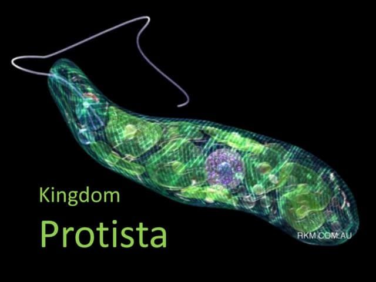
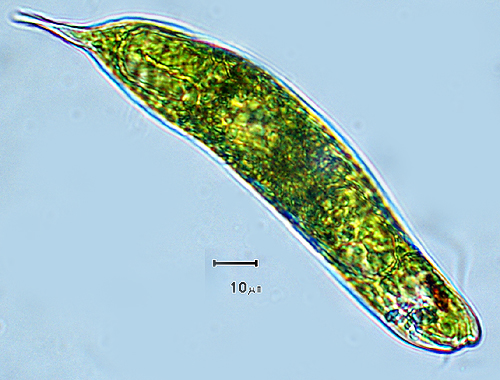

Protista Classification

Protista classification is generally based on the mode of nutrition and the presence or absence of certain structures. It can be broadly categorized into animal-like, plant-like, and fungus-like protists. Animal-like protists are heterotrophic, meaning they obtain nutrients from other organisms, while plant-like protists are autotrophic, meaning they produce their own food through photosynthesis. Fungus-like protists are typically saprophytes, feeding on dead organic matter.
Animal-like Protista (Protozoa):

Key features of protozoa:
- Unicellular: Unlike animals, they are single-celled organisms.
- Eukaryotic: They possess a membrane-bound nucleus and other organelles.
- Heterotrophic: They obtain nutrients from external sources, not from photosynthesis like plants.
- Motile: Many protozoa can move using various structures like pseudopodia, cilia, or flagella.
- Various ecological roles: Some are predators, others are herbivores, decomposers, or parasites.
Plant-like Protists (Algae):

Plant-like protists, commonly referred to as algae, are eukaryotic, photosynthetic organisms that are mostly aquatic.
They lack the complex structures of plants like true roots, stems, and leaves, and instead have simpler structures for growth and reproduction.
Key features of Algae:
- Photosynthetic: Algae contain chloroplasts with chlorophyll, enabling them to produce their own food through photosynthesis.
- Unicellular: Unlike animals, they are single-celled organisms.
- Algae are made up of eukaryotic cells, meaning their cells have a membrane-bound nucleus and other organelles.
- Aquatic Habitats: They are typically found in water, both freshwater and marine environments.
- Asexual and Sexual Reproduction: Algae can reproduce both asexually and sexually, depending on the species.
- Lack Complex Structures: Algae do not have specialized organs like roots, stems, and leaves, but they have structures that serve similar functions.
Fungus-like Protists:

Fungus-like protists are eukaryotic, heterotrophic organisms that share characteristics with fungi, such as being decomposers, absorbing nutrients from decaying organic matter, and producing spores. They are characterized by their ability to move like an amoeba during certain life stages and their cell walls composed of cellulose, unlike fungi which have chitinous cell walls.
Key features of Fungus-like Protists:
- Eukaryotic:
Like all protists, fungus-like protists have a well-defined nucleus and other membrane-bound organelles within their cells.
- Heterotrophic:
They obtain their nutrients from other organisms, either by absorbing nutrients from decaying matter or by parasitic means.
- Absorptive feeders:
They release digestive enzymes into the environment to break down organic matter and then absorb the resulting smaller molecules.
- Cell walls:
Unlike fungi, which have chitinous cell walls, fungus-like protists have cell walls made of cellulose.
- Spores:
Like fungi, fungus-like protists reproduce by producing spores that can be dispersed and develop into new individuals.
- Motility:
Some fungus-like protists can move during certain stages of their life cycle, using structures like pseudopodia (as in amoebas) to move and engulf food.